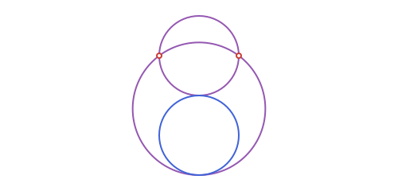
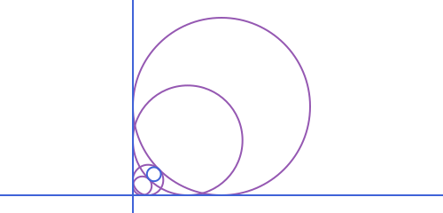
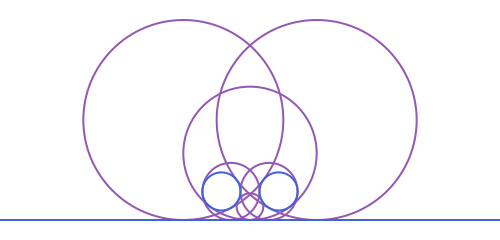
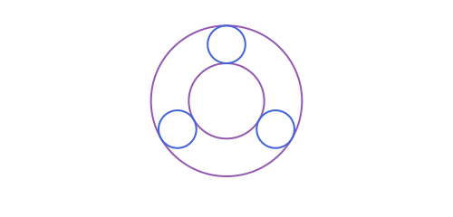
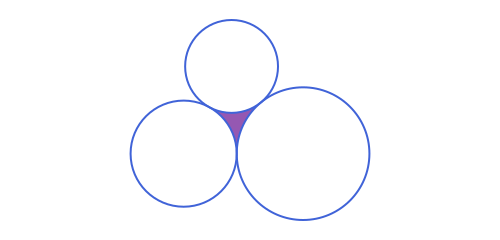
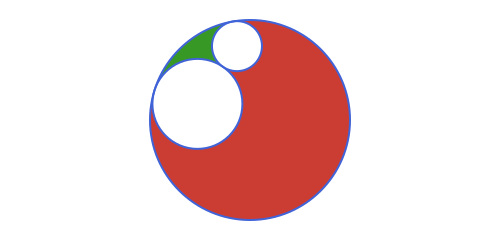
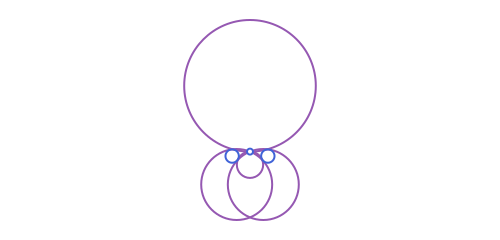
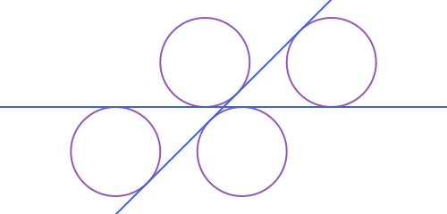

Tangency & Apollonius Problems
The classical problem of Apollonius asks: given three objects, each either a point, a line or a circle, find the circle(s) tangent to all three (a point counts as a "circle" of radius zero to be tangent to, i.e. passing through it). There are ten combinations up to symmetry (PPP, LPP, LLP, CPP, CLP, CCP, LLL, CLL, CCL, CCC); this package covers the ones that involve at least one circle or line (PPP is just circumcircle of an APTriangle, and LLL is incenter/excenters).
The functions are named by what role the points among the three objects play:
tangent_circles_through_points: two of the three objects are points the circle must pass through; the third is a line or a circle it must be tangent to.tangent_circles_through_point: one point to pass through, and two lines/circles to be tangent to.tangent_circles, no points at all: two or three lines/circles, all to be tangent to.
Every one of these can return multiple solutions (up to 8, for three circles), so they all return a Vector{APCircle2}, never a single APCircle2. The given circles themselves are always excluded from the result, even when the configuration is symmetric enough that one of them would otherwise satisfy the tangency equations too (a circle is degenerately "tangent" to itself in that sense).
Through two points, tangent to a line
In general there are up to two such circles, but whenever a and b are placed symmetrically about the perpendicular from their midpoint to l (as here), one of the two degenerates to infinite radius (a straight line), leaving exactly one genuine circle:
using Apollonius
a, b = APPoint(-3.0, 0.0), APPoint(3.0, 0.0)
l = APLine(APPoint(-5.0, -4.0), APPoint(5.0, -4.0))
sols = tangent_circles_through_points(a, b, l)
length(sols) # exactly 1, in this symmetric case1
The circle's center lies on the perpendicular bisector of [a,b] and it touches the line from above. A less symmetric choice of a, b and l generally gives two such circles, often of very different sizes, since one tends to hug the line closely while the other bulges around to reach it from the far side.
The same function also takes a circle instead of a line as the third, tangent-to object:
a2, b2 = APPoint(-2.0, 1.0), APPoint(2.0, 1.0)
given_c = APCircle2(APPoint(0.0, -3.0), 2.0)
sols_c = tangent_circles_through_points(a2, b2, given_c)
length(sols_c) # 2 here: one tangent externally, one internally2
Tangent to two or three circles/lines
tangent_circles covers every "no points, ≥2 circles/lines" combination: two lines and a circle (CLL), two circles and a line (CCL), or three circles (CCC, Apollonius' original problem, below):
l1 = APLine(APPoint(0.0, 0.0), APPoint(0.0, 1.0)) # the y-axis
l2 = APLine(APPoint(0.0, 0.0), APPoint(1.0, 0.0)) # the x-axis
c_cll = APCircle2(APPoint(6.0, 6.0), 2.0)
sols_cll = tangent_circles(l1, l2, c_cll)
length(sols_cll) # 44
c1_ccl = APCircle2(APPoint(0.0, 0.0), 2.0)
c2_ccl = APCircle2(APPoint(6.0, 0.0), 2.0)
l_ccl = APLine(APPoint(0.0, -3.0), APPoint(1.0, -3.0))
sols_ccl = tangent_circles(c1_ccl, c2_ccl, l_ccl)
length(sols_ccl) # 66
Tangent to three circles
With three circles and no points at all, this is Apollonius' original problem: up to 8 solutions, since each of the three tangencies can independently be internal or external.
R = 3.0
centers = [APPoint(R * cos(pi / 2 + 2pi * k / 3), R * sin(pi / 2 + 2pi * k / 3)) for k in 0:2]
given = [APCircle2(centers[k+1], 1.0) for k in 0:2]
sols3 = tangent_circles(given[1], given[2], given[3])
length(sols3) # 8 solutions8
Two of those eight happen to be concentric with the given configuration by symmetry here: a small one nested between the three circles, and a large one enclosing all of them:
small = sols3[argmin(s.r for s in sols3)]
big = sols3[argmax(s.r for s in sols3)]APCircle2([0.0, 0.0], 4.0)
Interstices: the gap between three tangent circles
Three mutually tangent circles (each pair, not just each with a third common circle) leave a curvilinear-triangle-shaped gap between them, called an interstice in this context (the same term used for the gaps of an Apollonian gasket). interstices returns it (or them, see below) as a Vector{APInterstice2}, each one bounded by three APCircularArc2s, one per circle:
c1 = APCircle2(APPoint(0.0, 0.0), 40.0)
c2 = APCircle2(APPoint(90.0, 0.0), 50.0) # tangent to c1: distance 90 == 40 + 50
c3_center = intersection(APCircle2(c1.center, c1.r + 35.0), APCircle2(c2.center, c2.r + 35.0))[1]
c3 = APCircle2(c3_center, 35.0) # tangent to both c1 and c2
gaps = interstices(c1, c2, c3)
length(gaps) # 1: an externally tangent "chain" of 3 has exactly one gap1
It's built by reusing tangent_circles(c1, c2, c3) above: every genuine interstice has an inscribed circle tangent to all three (one of the CCC solutions) that never encloses any of them. Unlike the "big" solution of a chain like this one, which contains all three and isn't a curvilinear triangle of these three circles at all (see soddy_circles for that pairing, inner and outer, given a name).
A second kind of configuration is possible: if one circle contains the other two (each internally tangent to it, and externally tangent to each other), the two inner circles' own tangency point splits the gap into two separate interstices instead of one:
R = 100.0
big = APCircle2(APPoint(0.0, 0.0), R)
A = APCircle2(polar_point_deg(R - 25.0, 100.0, big.center), 25.0) # inside big, tangent to it
B_center = intersection(APCircle2(big.center, R - 45.0), APCircle2(A.center, A.r + 45.0))[1]
B = APCircle2(B_center, 45.0) # inside big, tangent to it and to A
length(interstices(big, A, B)) # 22
interstices figures out which of these two cases applies (and in the second case, correctly splits the gap in two) on its own. The order c1, c2, c3 are given in never matters. It throws an ArgumentError if the three circles aren't all pairwise tangent to begin with.
An APInterstice2's area is computed via a Green's-theorem line integral around its three arcs rather than a "straight triangle plus or minus circular segments" formula: the latter needs an extra inside/outside decision per arc that breaks down for very unequal arc sizes (as in the nested case above), while the line integral doesn't:
area(gaps[1])
perimeter(gaps[1]) # the three arcs' arc_length, summed128.5594808273804rotate, reflection and homothety all work on an APInterstice2 too: each of the three arcs transforms on its own, and (since each does so correctly regardless of orientation, see reflection(::APCircularArc2, _) above) they still connect end to end afterward into the transformed gap.
Through a point, tangent to two objects
tangent_circles_through_point covers the remaining "one point + two circles/lines" cases (LLP, CCP, CLP). For example, tangent to two circles and passing through a chosen point between them:
c1 = APCircle2(APPoint(-4.0, 0.0), 1.5)
c2 = APCircle2(APPoint(4.0, 0.0), 1.5)
p = APPoint(0.0, 1.0)
sols_p = tangent_circles_through_point(c1, c2, p)
length(sols_p)4
Fixing the radius in advance
tangent_circles_with_radius(obj1, obj2, r) is a different kind of question from the rest of this page: instead of "find the tangent circle(s), whatever their radius", it fixes the radius r up front and asks for circles of exactly that radius tangent to two lines, a line and a circle, or two circles:
l1 = APLine(APPoint(0.0, 0.0), APPoint(1.0, 1.0)) # the y-axis
l2 = APLine(APPoint(0.0, 0.0), APPoint(1.0, 0.0)) # the x-axis
sols_r = tangent_circles_with_radius(l1, l2, 3.0) # radius 3, tangent to both axes
length(sols_r), all(s -> s.r == 3.0, sols_r) # 4 solutions, one per quadrant(4, true)
(l1/l2 need to actually meet somewhere for this to have solutions: two parallel lines always return an empty vector, since then either no radius works or, at the one radius that does, a whole line of centers would qualify rather than finitely many circles, a degenerate case this function doesn't handle.)
It's built internally via offset_line(l, d), which shifts a line by a signed distance along its own normal, turning "tangent to l at distance r" into "passes through l shifted by ±r", then intersecting those shifted lines/circles directly:
offset_line(l1, 3.0) == APLine(APPoint(-3.0, 0.0), APPoint(-3.0, 1.0)) # shifted left of p1->p2falseRelated helpers
external_similitude_center/internal_similitude_centerand the common tangent lines from Circles are the two-circle building blocks these constructions are built from.- The triangle-specific tangent-circle configurations (
mixtilinear_incircle,soddy_circles,three_tangent_circlesandthebault_circles) are covered in Triangles & Triangle Centers, since they are defined in terms of a triangle's sides and angles rather than arbitrary circles.